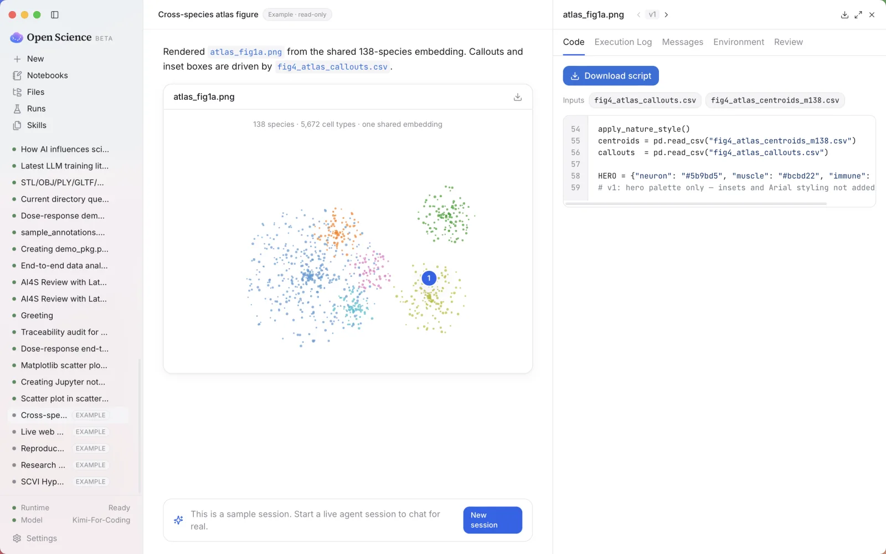
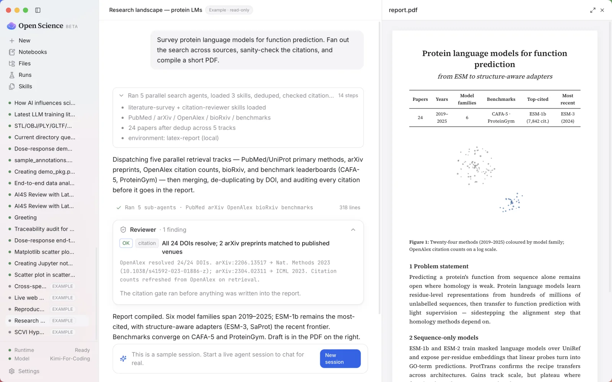
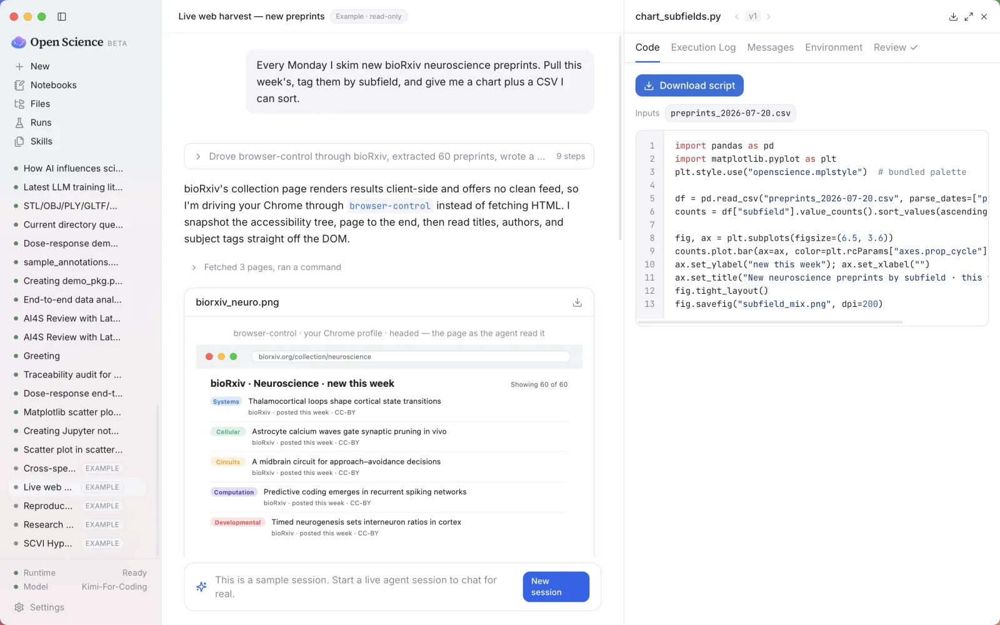
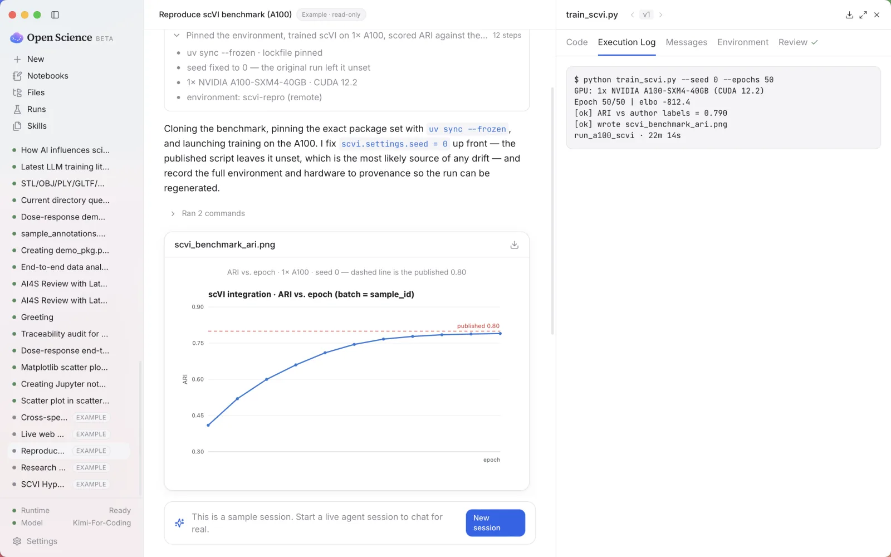

Local-first, model-agnostic AI research workbench. Run the entire research loop — from exploration to publication — in one auditable desktop session.
One meta-skill drives four stages — each produces real, inspectable artifacts, not just chat replies.
Turn a broad research direction into concrete topics, hypotheses, and a pre-survey.
→Produce a 6–20 page PDF literature review with 60+ real, verified citations.
→Design docs, runnable code, results with provenance, figures, and analysis reports.
→8–14 page research paper, 200+ citations, 4–8 figures — publication-grade output.
Every feature designed to accelerate scientific work while keeping you in control.
The bundled ai4s-agent chains specialist skills end to end — explore, survey, experiment, write — producing inspectable artifacts at every stage.
Every figure, table, and report links back to the exact code, inputs, environment, model output, and conversation that produced it.
Sessions, data, provenance, notebooks, and run records live in local folders on your machine. Nothing leaves by default.
Bring your own model. The runtime talks through a clean SDK layer — providers, skills, and MCP servers stay pluggable.
Local, SSH/Slurm, Modal, and notebook-batch runs are captured as reproducible run records, not loose terminal scrollback.
A token-authenticated gateway serves the real UI to your phone or LAN browser. Start a run at your desk, check it on your phone.
Drive your own Chrome — profile and logins intact — to read the live web the way you do, or an isolated private browser on demand.
Agent skills, MCP servers, one-click science connectors (arXiv, PubMed, Crossref, Materials Project…), slash commands, and shell mode.
Decoupled layers with a strict SDK boundary — the UI never calls the agent runtime directly.




Free, open-source, AGPL-3.0-only licensed. Available for all major platforms.
Or build from source:
git clone https://github.com/ccfwwm/zerowallscience && pnpm install && pnpm build